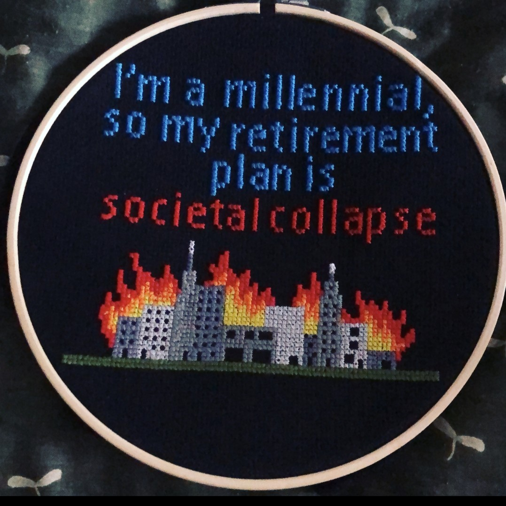

Embroidery
Cross Stitch
Definition: The art of decorating fabric or other materials with needle and thread or yarn.

Definition: A form of counted thread embroidery, in which designs are created (typically on aida fabric) through x-shaped stitches.
